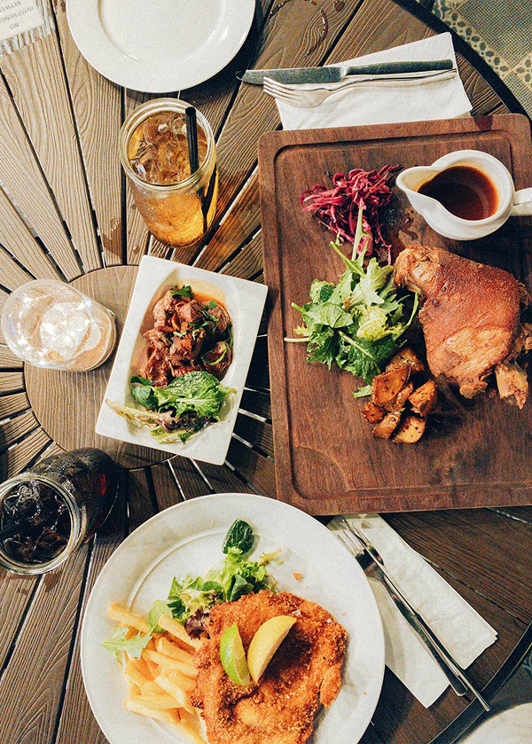

Recipe Diaryとは
Recipe Diaryは、日々の食卓を少し豊かにするレシピを提案するサイトです。ご家庭で簡単に作れるものから、少し手間をかけたおもてなし料理まで、幅広いジャンルの料理をご紹介しています。
「作る楽しさ」「食べる喜び」を皆さんにお届けできるよう、季節の食材を取り入れた新しいレシピを随時更新していきます。

私たちの3つのこだわり
- 1. 旬の食材を活かす
- 季節ごとに最も美味しく、栄養価の高い旬の食材を積極的に取り入れたレシピを考案しています。
- 2. 毎日続けられる手軽さ
- 特別な調理器具がなくても、どこのスーパーでも手に入る食材で簡単に作れるステップを心がけています。
- 3. 見た目にもおいしい
- 食卓に並べたときに気持ちがパッと明るくなるような、彩りや盛り付けのちょっとしたコツも合わせてお届けします。
サイト運営者
料理研究家：Recipe Diary運営事務局
「料理が苦手な人にも、作る楽しさを知ってもらいたい」という思いから本サイトを立ち上げました。
雑誌やWebメディアでのレシピ提供、料理教室の開催など多方面で活動しています。
お仕事のご依頼などはお問い合わせページよりお気軽にご連絡ください。